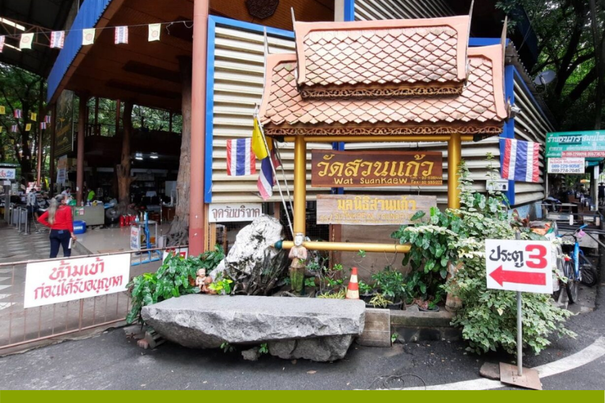
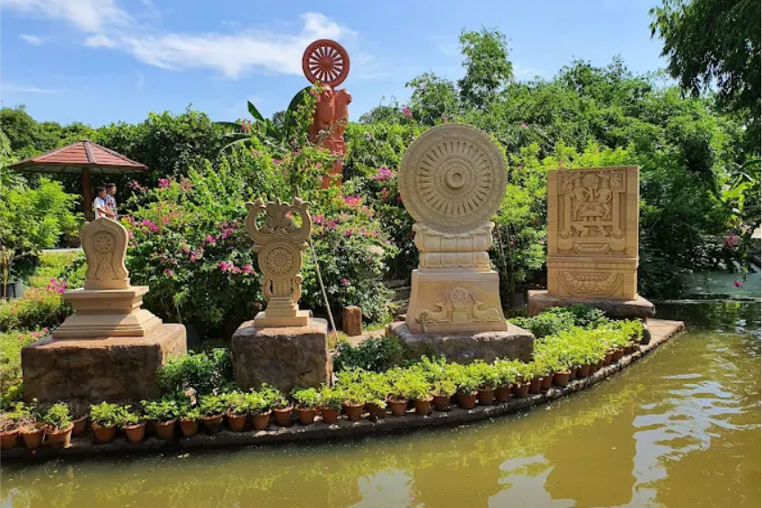
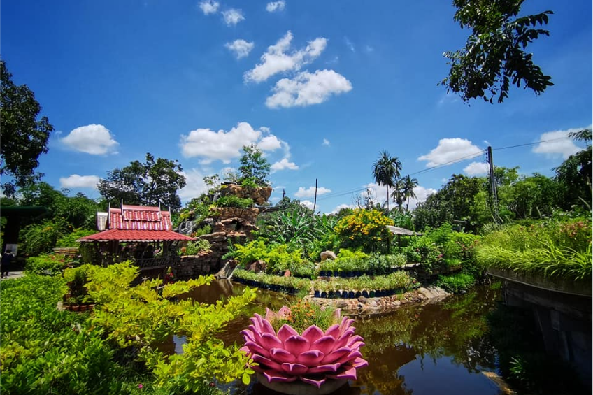
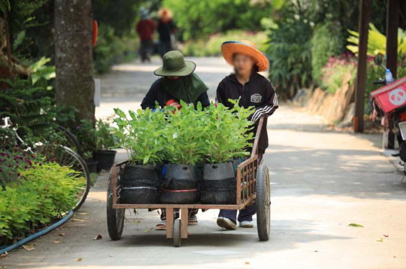
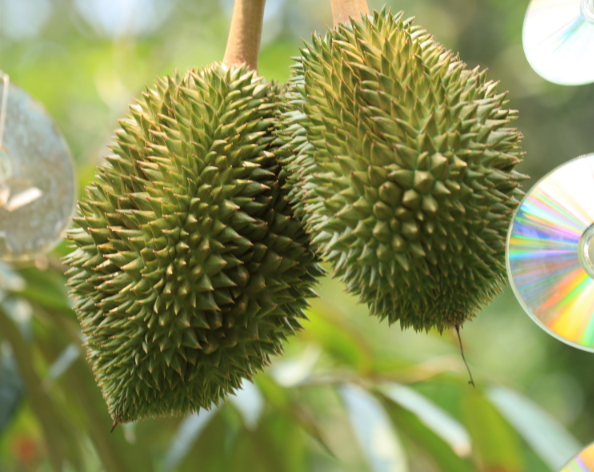
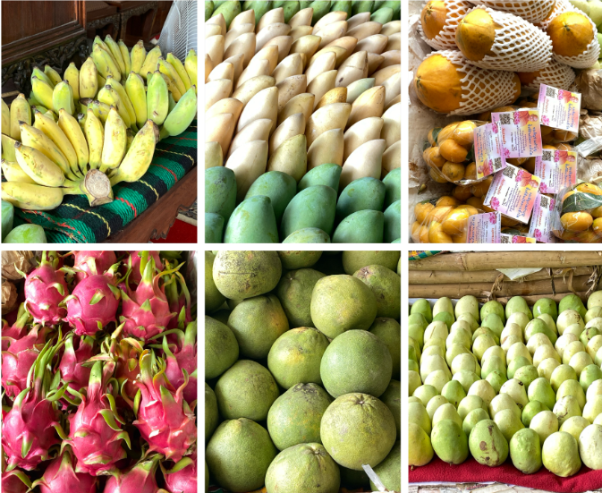

วัดสวนแก้ว

ส่วนใหญ่วัดสวนแก้วเป็นที่รู้จักกันในด้านรับบริจาคของเก่า ของใช้แล้ว เข้ามาในวัดก็จะเห็นสิ่งของเหล่านี้มีอยู่กระจัดกระจายอยู่ทั่วบริเวณวัดแต่ก็เป็นสัดเป็นส่วน เมื่อจอดรถในบริเวณลานจอดเรียบร้อย ทางวัดได้จัดรถกอล์ฟพาสื่อมวลชนไปเที่ยวชมสวนเกษตร


สวนเกษตรของวัดสวนแก้ว มีทั้งหมดประมาณ 400 ไร่ ปลูกหลายอย่าง กล้วย ขนุน มะละกอ ส้มโอ ทุเรียน


นอกจากนั้นวัดสวนแก้วยังมีสำนักสาขากระจายอยู่ทั่วประเทศ ที่ทำสวนเกษตรรวมเนื้อที่ประมาณ 4,000 ไร่ ผลิตผลทางการเกษตรต่างๆ จึงถูกส่งมาที่วัดที่เป็นศูนย์กลางกระจายสินค้าการเกษตรเหล่านั้น

ส่วนนี้นอกจากจะเป็นศูนย์กลางจะหน่ายสินค้าแล้ว ยังจัดเป็นสวนมีน้ำตกจำลอง เป็นภูมิปัญญาที่น่าชื่นชมจริงๆ นอกจากนั้นก็มีที่นั้งรับประทานอาหาร จิบกาแฟ